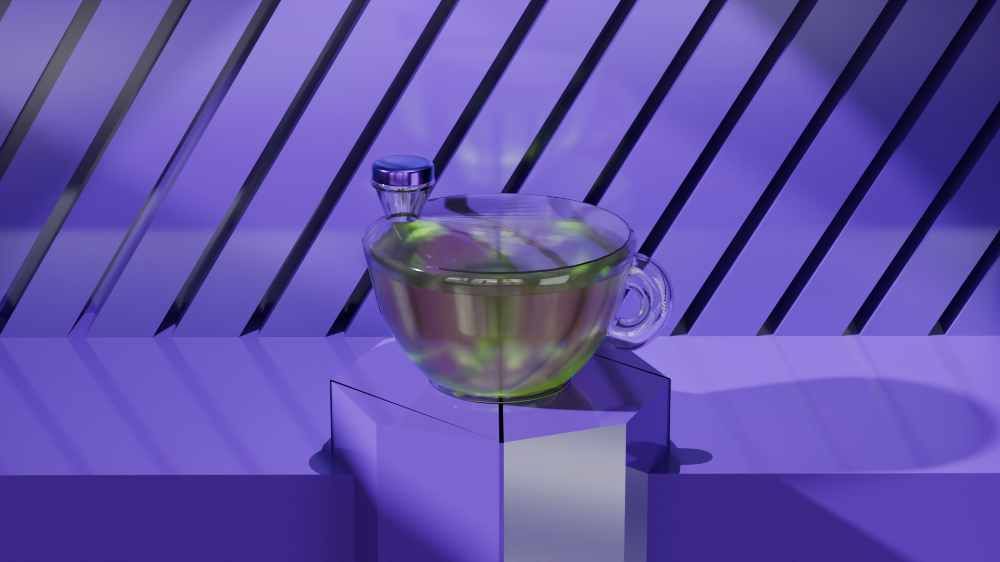
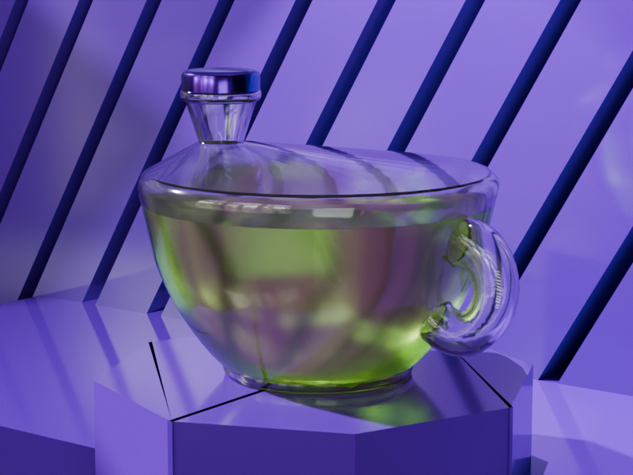
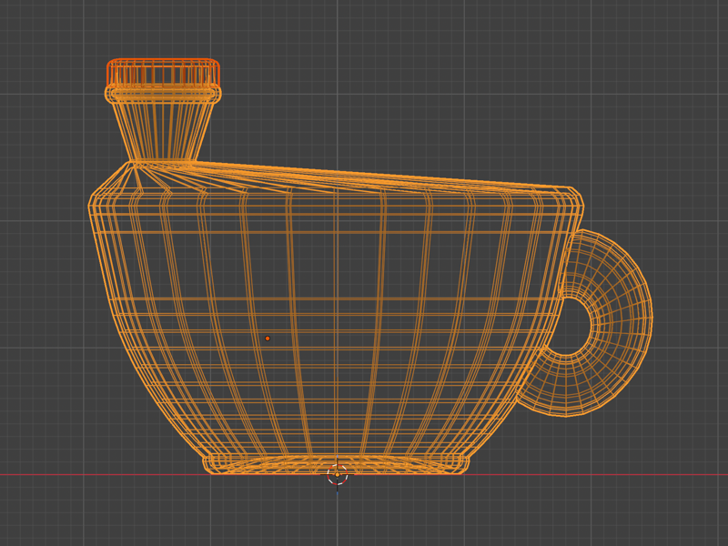
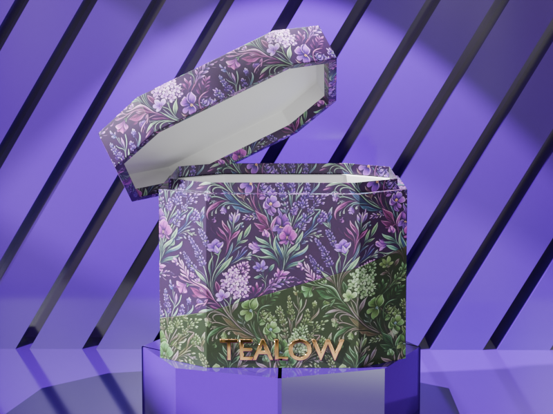

Herbal Tea Bottle
2026

The brief called for a glass bottle for a herbal tea brand with a fun and quirky personality. Rather than starting from a conventional bottle silhouette, I let the product's identity drive the form: the result is a bottle modelled after a tea cup, with a handle and an off-center pouring nozzle that leans into the playfulness of the brand.
The main technical focus was convincing material work: glass with accurate refraction and transparency, metal for the hardware, and liquid visible through the bottle walls. Balancing these materials under a single lighting setup was the central challenge, particularly the glass, which picks up reflections and colour from everything around it.
Completed as part of Robin Ruud's Blender Essentials course, the project was delivered as a full branded product mockup with packaging.


